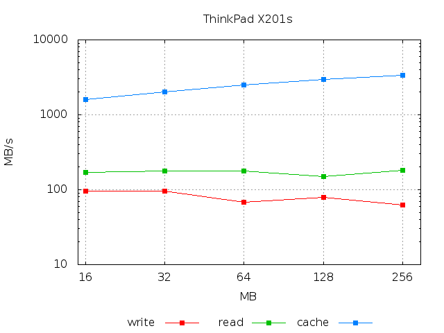
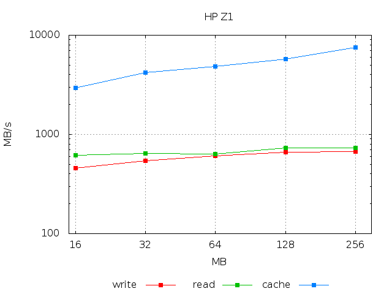

gbtestdisk
Table of Contents
Introduction
An important aspect of computer performance is the spead with which
data are written to and read from the hard drive. To test hard drive
speed I put together a little shell script, gbtestdisk. It measures
the speed for synchronous writing and reading using the 'dd'
command. Notice that this is an high level measure, that is it also
takes into consideration the file system, the system buses and all
other possible bottlenecks. For this reason, rates reported by this
script are in general lower than the ones directly reported by
dd. Indeed the rate reported by dd represents the rate without any lag
or synch time. Time estimations by this script are a better
approximation of the time effectively used by a program to open a
file, write or read the content and close it. In this respect its
measure should be a good approximation of the actual performances
observed by the user.
Installation and use
To use it, simply download the file, move it in a directory with write permission and run the script to test the speed of the partition this directory belongs to. Depending on the directory where you place it, the script might require root permission, so be prepared to insert the appropriate password. The script accepts the following options
-h print this help -c number of MB of the file size -r number of executions of the write/read cycle -v verbose output: print information about the performed tests
For instance to check the write, read and cache read for a file of 64 MByte use
gbtestdisk -c 64 -v
The output should be something like (this is the result on my laptop)
# write MB/s read MB/s cache MB/s max 170.212000 180.790000 2782.608000 min 33.437000 175.824000 2285.714000 avg 106.007400 179.391200 2570.997600
Typically the time necessary to write a file to the disk or to read it depends on its size. The two pictures below show how the writing/readings speed change with file size.


The plots above have been obtained with
for size in 16 32 64 128 256; do echo -n "$size " ; ./gbtestdisk -c $size | grep 'avg' | gawk '{print $2,$3,$4}'; done | gbplot -T png -o "laptop.png" -v -l xy \ -C 'set key below; set xrange [15:300]; set xtics (16,32,64,128,256); set grid;\ set title "ThinkPad X201s"; set xlabel "MB"; set ylabel "MB/s"'\ plot 'u 1:2 title "write" w lp pt 5, "" u 1:3 title "read" w lp pt 5, "" u 1:4 title "cache" w lp pt 5'